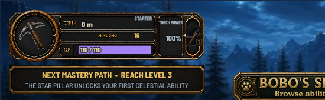
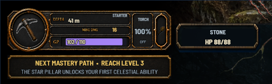
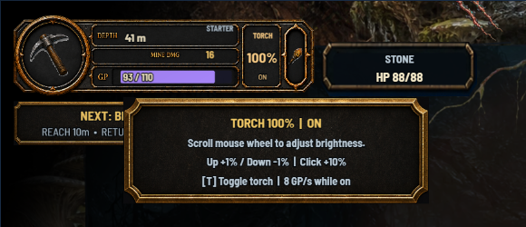
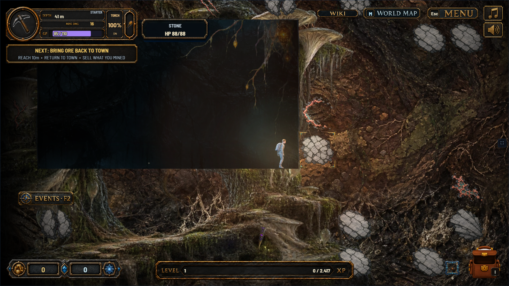
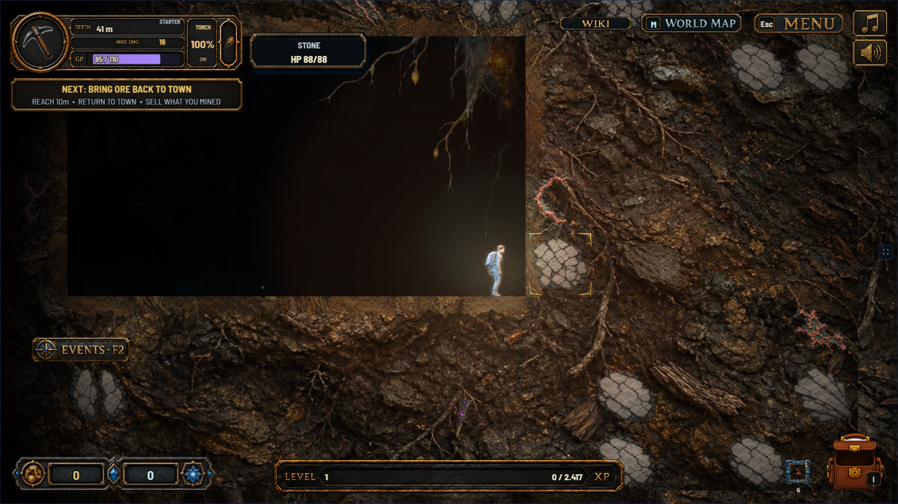

The torch correction is approved and implemented. All other visual changes proposed in this review were rejected.
Torch: one aligned control
APPROVED · IMPLEMENTED
A centered live percentage, explicit ON/OFF status, a clean torch icon, and mouse-wheel guidance.
Before — legacy torch frame inside the new panel
After — percentage and status aligned inside their compartment

Hover over the torch to see the controls and current GP cost. The displayed key follows the player's binding.
Checked in the real game at 1%, 100%, and 200%, with wheel, click, toggle, pause, and four window sizes.
Rejected mining proposals
REJECTED
Rejected because these changes made the scene more boring. The comparisons remain here as a record; they were never wired into the game.


CURRENT GAME
REJECTED · B
Rejected: B adds brighter player shading and a restrained rim to A's coherent earth material, authored tunnel cut edges, and warmer ore blending. The character's position, pose, scale, torch setting, and tile HP are identical.
This is a staged chamber at 41 m for comparing presentation. Its rectangular layout is not a natural-playthrough example. Both proposals reuse existing game artwork. Their code is isolated from production. Both directions are rejected; keep the existing cave's richness and character.